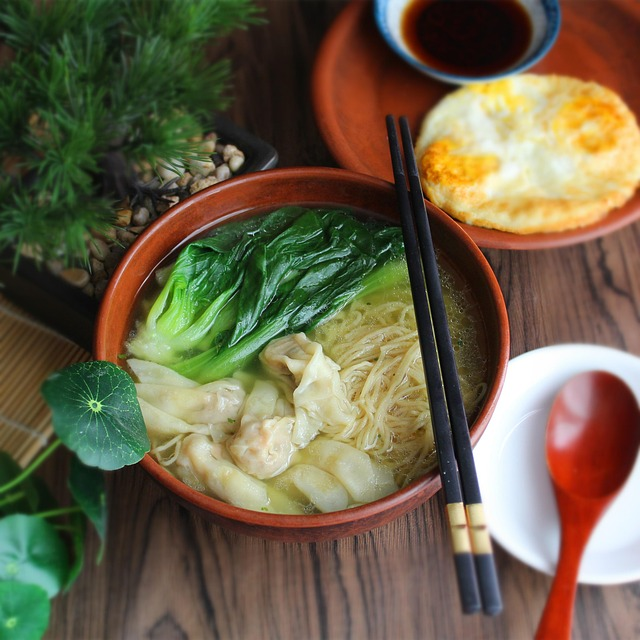

Home
Wonton Noodle Soup (or Huntun Mian Tang) Recipe

Description
Wonton noodle soup is a delicious Chinese dish popular in southern China such as Guangzhou, Hong Kong, and Shantou.
While there are many variations, particularly of wonton fillings, most often they consist of green onions, pork and shrimp.
I love having wonton noodle soup when I'm a bit ill or on particularly cold days. It's a fairly simple dish and spice is optional but most
certainly encouraged.
Ingredients
- Chinese Egg Noodles
- Pork (200g)
- Shrimp (50g)
- Light Soy Sauce (1Tbspn)
- Green Onion (1tspn)
- Ginger Root (1tspn
- Wonton Wrappers (6-15)
- Chicken Bone Broth (3 cups)
- More Green Onions (2Tbspn)
Steps
- Roughly chop the pork if it is not pre-chopped, then finely chop the shrimp. Mix the meats in a largeg bowl with the 1 teaspoon of green
onions, soy sauce, and ginger root. Let the mixture stand for about 30 minutes.
- Take a wonton wrapper and fill it with about 1 teaspoon of the mixture. Repeat for as many wontons as you like. I recommend between 6 and 15
dependiing on their size. If your wonton wrappers are very large, try using twice as much filling.
- Lightly dampen the edges of your wonton wrappers with water, then fold them over to form a triangle, pressing the edges to seal them. Then,
bring together the corners, their tips overlapping, and seal them by pressing them together.
- Bring the chicken broth to a boil in a pot, then gently place the wontons in to cook for about 5 minutes. During this time, chop some more
green onions.
- Ladle the wontons and broth into a bowl, then add more chopped green onions to the soup